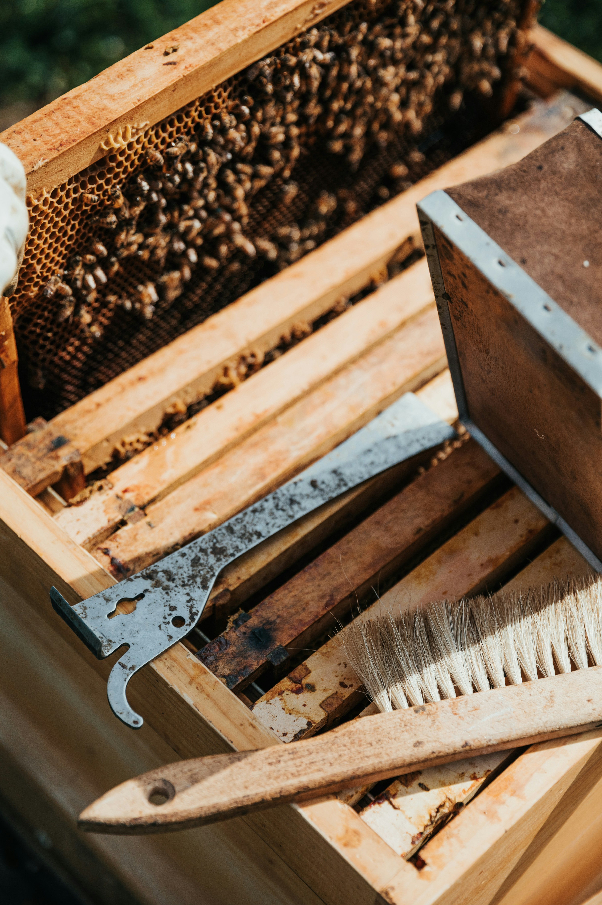

A Year in the Apiary - August Beekeeping Tasks (UK)
August overview – a busy turning point in the year
August is one of the busiest and most important months in the UK beekeeper’s calendar. Colonies are usually at their largest, there may still be a strong nectar flow (heather, balsam or late summer forage), and at the same time you are already planning for winter. The bees you raise in late summer will form the core of your winter population, so everything you do now has a direct impact on how well your colonies survive until spring.
This is the month to look carefully at varroa levels, analyse the strength and health of each colony, decide whether to unite weak hives, and ensure that every colony is on track to have enough winter stores. You may also be harvesting honey, managing wasp pressure, and tidying up supers and equipment to prevent wax moth damage.
If you’re following the full Year in the Apiary guide, think of August as the point where you shift from expansion to consolidation – making sure each hive is healthy, queenright and well provisioned for the colder months ahead.

Key August priorities at a glance
- Monitor and treat varroa before winter bees are reared (see Varroa Management).
- Decide whether to harvest honey, and how much to leave for the bees.
- Assess winter stores – aim for around 20–25 kg for a full-sized colony.
- Unite weak or queenless colonies so you don’t nurse failing hives into winter.
- Watch for signs of disease such as foulbrood, chalkbrood, sacbrood and Nosema.
- Control wasps and robbing by reducing entrances and using traps where needed.
- Protect stored supers and comb from wax moth and rodents.
- Keep up good apiary hygiene and continue accurate record-keeping (see Hive Hygiene).
Honey flow and harvesting in August
Depending on your location, your bees may still be working late flows such as heather (particularly in upland areas), Himalayan balsam along river corridors, or other late summer forage. In some areas the main flow is already over and colonies are beginning to slow down.
Before you harvest, make sure that honey intended for extraction is fully or mostly capped. Uncapped honey often has a higher moisture content and is more prone to fermenting in the jar. If you have frames of uncapped honey that are still quite thin and runny, leave them on the hive for the bees to finish.
If the flow has finished and the supers are well capped:
- Remove supers using your preferred method (bee escapes, clearing boards, gentle brushing).
- Extract honey in a clean, warm environment – see our guide to how bees make honey for background.
- Once extracted, return wet supers to the hive for a few days so the bees can clean them up.
- After they are dry, remove supers and store them safely to prevent wax moth and other pests.
If you decide not to extract some of the honey, you can nadirm a super of partially filled comb beneath the brood box. This lifts the colony further off the cold ground and provides an extra reserve of food for winter.
Varroa monitoring and treatment
August is a crucial time to deal with varroa mites. The aim is to ensure that the winter bees raised later in August and September develop in a low-mite environment, giving them the best chance of surviving through to spring.
Make time to:
- Check mite levels using a monitoring board, sugar roll or alcohol wash.
- Review your annual plan in the Varroa Management guide.
- Choose an approved treatment that suits your hives and conditions (for example, thymol-based products where temperature allows).
Always read and follow the manufacturer’s instructions, especially regarding temperature range, exposure time and whether supers must be removed. Avoid “off-label” or non-approved treatments – these can be unsafe for you, your bees and the wider environment.
Some beekeepers also use oxalic acid vapourisation (OAV) later in the year when colonies are brood-light. If you choose to do this, ensure you understand the technique well, use the correct personal protective equipment and comply with local regulations.
Feeding and winter stores
As the main nectar flow slows or ends, colony consumption may start to outstrip incoming forage – especially in areas with poor late summer flowering. In August you should check whether each hive has enough food reserves to carry it through winter.
A full-sized colony in the UK typically needs around 20–25 kg of stores. Smaller colonies or nucs may manage with less, but still need enough sealed honey or syrup to survive cold or wet spells when flying is impossible.
If a colony feels light when you heft the hive, or your notes show that frames are poorly filled, it’s time to start feeding:
- Use a strong syrup (around 2:1 sugar to water) or a commercial invert feed.
- Feed in the evening to reduce the risk of robbing.
- Avoid frequent small amounts that excite the colony – instead, offer larger feeds that they can take down steadily.
- Make sure feeders are bee-tight to avoid drowning and robbing.
Fondant is usually reserved for late winter or emergency feeding, but some beekeepers use it earlier if liquid feeding is not possible. If you are unsure, your local association or mentor can advise on the most suitable approach for your area.
Assessing colony strength and uniting weak hives
August inspections should focus on whether each colony is viable for winter. Ask yourself:
- Is the colony queenright and laying well?
- Is there a good covering of bees on most frames?
- Are brood patterns compact and healthy?
- Are there sufficient stores and pollen?
If you find weak colonies that are disease-free but unlikely to survive alone, it is often better to unite them with a stronger hive rather than try to nurse them through winter. The classic newspaper method works well:
- Confirm both colonies are free of foulbrood or other serious disease (see Bee Diseases and Pests).
- Retain the better queen and remove the poorer one.
- Place a sheet of newspaper over the brood box of the queenright colony.
- Make a few small slits in the paper, then place the brood box of the queenless colony on top.
- Over a few days, the bees chew through the paper and unite with minimal fighting.
- Once they are integrated, rearrange frames if needed and continue managing the now stronger colony.
You can still make splits in August, but it is risky unless you use a good mated queen and can be confident that both colonies will be strong and well provisioned before winter. For many beekeepers it is safer to unite and enter winter with fewer, stronger colonies.
Health and disease watch – spotting problems early
August is an excellent time to review overall colony health. As brood areas begin to contract, it can actually be easier to spot problem patches or unusual patterns. Watch for:
- Irregular or “pepper pot” brood patterns that may suggest queen issues or disease.
- Dead or twisted larvae, discoloured cappings, or ropy brood (potential foulbrood).
- Grey, chalky mummies at the entrance or in cells (see chalkbrood).
- Scattered, watery or sac-like larvae hanging in cells (possible sacbrood virus).
- Adult bees with deformed wings or crawling on the ground, often associated with high varroa loads.
If you suspect notifiable diseases such as American or European foulbrood, do not move frames between colonies. Contact your local bee inspector through BeeBase for advice. Good hive hygiene – cleaning tools, avoiding unnecessary comb transfer and maintaining tidy apiaries – all help to reduce disease risk.
Wasps, robbing and defending the hive
By August, wasp colonies are often at their peak and can cause significant trouble in the apiary. They are attracted by the smell of honey and syrup, and will quickly target weaker hives or exposed comb.
To protect your bees:
- Reduce hive entrances to a size the colony can defend (especially for smaller colonies or nucs).
- Keep the apiary tidy – avoid leaving exposed honey, cappings or sticky supers lying around.
- Use wasp traps placed away from hive entrances, checking and emptying them regularly.
- Inspect weak colonies more frequently, as they are most at risk from wasp attacks and robbing.
Be aware that robbing behaviour can also occur between honey bee colonies. If you notice frantic flying, bees fighting at entrances or bees trying to enter through joints and cracks, take action quickly by closing down entrances, removing open feed and ensuring hives are bee-tight.
Supers, comb and equipment – preventing wax moth damage
Once honey supers have been removed and cleaned up by the bees, you need to store them so they remain useful for next year. The main threats are wax moth, rodents and damp.
- Stack supers in a cool, dry, well-ventilated area.
- Where possible, alternate boxes at right angles to create a chimney effect and discourage moths.
- Use solid floors or mesh to keep mice and rats out of stored equipment.
- Inspect stored comb periodically for signs of webbing or moth larvae and act quickly if you see any damage.
Good equipment care now saves you time and money next season and helps the bees by giving them clean, usable comb to build on quickly when the spring flow starts.
August inspection checklist
During each August inspection, aim to answer the following questions for every colony:
- Is the colony queenright? Do I see eggs or very young larvae?
- Is the brood pattern compact and healthy with good coverage?
- Are there any signs of disease in brood or adult bees?
- What is the current varroa level, and do I have a treatment plan in place?
- Does the colony have enough stores for the time of year, and for winter overall?
- Is the colony strong enough to survive winter alone, or should it be united with another hive?
- Are entrances reduced appropriately, and is there any sign of wasp activity or robbing?
- Are supers and spare comb being stored safely to prevent wax moth and damage?
Make notes in your hive records after each inspection – your future self (and your bees) will thank you when you look back in autumn and winter.
Common beginner mistakes in August
- Harvesting too much honey and leaving colonies short of winter stores.
- Delaying varroa treatment until too late, so winter bees are raised with high mite loads.
- Trying to overwinter very weak or queenless colonies instead of uniting them.
- Feeding small amounts of syrup frequently, which can encourage robbing and wasp attacks.
- Leaving wet supers or uncapped honey exposed in the apiary, attracting wasps and robbers.
- Ignoring early signs of brood disease or not seeking help promptly when something looks wrong.
If you are unsure, talk to your mentor or local association, or revisit the relevant pages such as Hive Management, Varroa Management and Bee Diseases and Pests.
August beekeeping FAQs (UK)
What are the main beekeeping tasks in August in the UK?
Your main tasks are monitoring and treating varroa, checking colony strength, ensuring enough winter stores, harvesting surplus honey, uniting weak hives, watching for disease and controlling wasps and robbing.
Should I still inspect my bees every week in August?
You may not need full swarm-control inspections every seven days, but you should still check colonies regularly – typically every 7–10 days – to monitor brood patterns, stores, varroa and signs of disease or queen problems.
When is the best time to treat for varroa in August?
Treat as soon as possible after the main honey harvest so that winter bees are raised with low mite levels. Choose a treatment suitable for the temperatures in your area and follow the product instructions carefully.
How much honey should I leave for my bees?
As a guide, aim for around 20–25 kg of stores for a full-sized colony in the UK. Remember that this can vary with hive type, local climate and strain of bees, so use your notes and local advice to fine-tune the amount.
Can I feed bees and treat for varroa at the same time?
It depends on the treatment. Some products are compatible with feeding, while others are not. Always read the label and follow the manufacturer’s recommendations, and seek local advice if you are unsure.
How do I know if a colony is too weak to overwinter?
A colony that occupies only a few frames of bees, has patchy brood, or lacks a good laying queen late in the season may struggle. If it is disease-free, consider uniting it with a stronger colony rather than risking winter losses.
What should I do if I see signs of serious disease?
If you suspect foulbrood or another notifiable disease, do not move frames or equipment between colonies. Contact your local bee inspector via BeeBase for advice and follow official guidance.